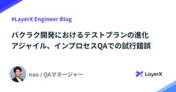
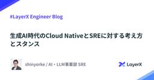
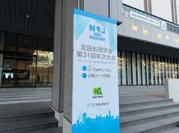

LayerX エンジニアブログ
https://tech.layerx.co.jp/
LayerX の エンジニアブログです。
フィード

バクラク開発におけるテストプランの進化 アジャイル、インプロセスQAでの試行錯誤 19
19
LayerX エンジニアブログ
LayerX QAマネージャーの 中野@naoです。 アジャイル開発のスピード感とあるべき品質保証の両立、悩みますよね。私たちLayerXのQAチームも、日々試行錯誤を重ねています。今回は、その中でも『テストプラン』に焦点を当て、私たちがどのように考え、実践しているのかをご紹介します。 概要 私が所属するバクラク事業部では2週間サイクルでリリースを行なっており、リリース前の3営業日がテスト期間です。QAエンジニアはインプロセスQAとして、各プロダクト開発チームに入ってテストや品質に関わる活動をしています。 従来のテストプランは、テスト戦略、環境、データ、スケジュール、リソース、タスク、リスク管…
1日前

生成AI時代のCloud NativeとSREに対する考え方とスタンス 37
LayerX エンジニアブログ
こんにちは。LayerX AI・LLM事業部 SREのshinyorke（しんよーく）と申します。 現在はAI・LLM事業部のAIプラットフォーム「Ai Workforce」1人目のSREとして、 SRE（Site Reliability Engineering）の戦略策定と導入、実装。 企業への導入に際する技術的なサポート・伴走。 SREチーム立ち上げの為の組織作り。より具体的にはSREの採用と育成。 以上のミッションを担っています、入社から現在までの営みはこちらのブログで紹介しています。 tech.layerx.co.jp 一人目SREとして情報とノウハウを泥臭く取りに行きながら、さっさと…
4日前

【NLP2025参加レポート】LayerXにおけるAI・機械学習技術の活用と展望の展示内容やセッションの紹介など 1
LayerX エンジニアブログ
機械学習エンジニアの伊藤（@sbrf248）です。この記事は、2025年3月10日（月）〜 2025年3月14日（金）に開催された言語処理学会第31回年次大会（NLP2025）の参加レポートとなります。 LayerXとしては、昨年に引き続きプラチナスポンサーとして協賛させていただきました。 tech.layerx.co.jp 昨年と同様にオフラインとオンラインのハイブリットでの開催となり、オフラインはJR長崎駅西口直結の「出島メッセ長崎」が会場となりました。 NLP会場告知看板 スポンサー展示 スポンサー展示では、学生や企業の方など多くの方にお立ち寄りいただきました。ありがとうございます。La…
5日前

Taskfile.devでシンプルにタスクを管理する
LayerX エンジニアブログ
本記事では、バクラクのデータ基盤で導入したTaskfile.devというタスクランナーを紹介します。私の経験の中でも、学習コストの低さ・シンプルさの観点で、抜群に導入しやすいタスクランナーだったのでおすすめです。本記事が、タスクランナーで困っている人たちに届けばいいなと願っています。
8日前
なぜ人は人形に語りかけるのか――生成AIが解放する700万年前からの叡智
LayerX エンジニアブログ
こんにちは。LayerX AI・LLM事業部でプロダクトマネージャー（PdM）とBizDevをしている河野です。 この連載はその名の通り「LayerXのエンジニアのブログ」ですが、僕はエンジニア出身ではありません。 大学は社会科学部で、哲学や歴史などの人文科学や、社会問題や文化人類学などの社会科学を勉強していた、文系人間です。 社会人キャリアとしても、IT系の大手法人営業、デジタル系の戦術コンサルを経て、昨年までの約8年間は仲間と立ち上げた会社の事業責任者として「日本エンタメ業界の収益性を上げたい！」と奮闘していました。（昨年6月にLayerXにジョイン） そんな僕が、技術者集団であるLaye…
10日前
NLP2025（言語処理学会第31回年次大会）にプラチナスポンサーとして協賛いたします
LayerX エンジニアブログ
バクラク事業部 にてAIや機械学習領域のマネージャーを務めております機械学習エンジニアの松村（@yu-ya4）です。LayerXは、NLP2025（言語処理学会第31回年次大会）にプラチナスポンサーとして協賛いたします。 NLP2025は現地とオンラインのハイブリッド開催が予定されており、私を含む数名のメンバーで現地会場を訪れる予定です。LayerXがNLPに協賛・参加するのは昨年に引き続き3度目となります。本年もNLP界隈の皆様との交流を深めさせていただければと思っておりますので、何卒よろしくお願い致します。 NLP2025概要 NLP2025（言語処理学会第31回年次大会）は、日本における…
13日前
【DEIM2025参加レポート】LayerXにおけるAI・機械学習技術の活用と展望の発表内容やセッションの紹介など
LayerX エンジニアブログ
機械学習エンジニアの深澤 (@qluto) です。 この記事は2025年2月27日 ~ 3月4日にオンライン・オフサイト（福岡県福岡市）のハイブリッドにて開催されたDEIM2025 第17回データ工学と情報マネジメントに関するフォーラム（第23回日本データベース学会年次大会）の参加レポートです。 LayerXとしては、昨年に引き続きプラチナスポンサーとして協賛させていただき、企業ブースの展示と技術報告、チュートリアルにおけるパネルディスカッションに参加させていただきました。 tech.layerx.co.jp 今年は 2月27日〜3月1日にオンラインによる一般発表セッションの後、土日を挟んで …
15日前
DB マイグレーションにおける Flaky test の解消
LayerX エンジニアブログ
バクラク事業部 Platform Engineering 部 SRE チームの uehara です。 今回はマイクロサービスの分割過程で発生した Flaky test (不安定なテスト) の問題とその調査方法・解決方法について紹介します。 約2割の確率で発生していたテストエラーを完全に解消できました。 背景 とあるマイクロサービスが持つ機能を、複数の別サービスへ切り出す作業を進めています。便宜上、分割元のサービスを A、分割先を B, C として表現します。 実運用を止めずに段階的に切り替えるため、移行途中の時点ではサービス A が持つデータベースを B, C からも利用している状態です。デー…
15日前
LLMの不確実性との付き合い方：AIワークフロー開発におけるケーススタディ
LayerX エンジニアブログ
こんにちは。AI・LLM事業部エンジニアの@koseiと申します。note.layerx.co.jp AI・LLM事業部ではお客さまの幅広い業務を効率化するためのプラットフォーム型のプロダクト「Ai Workforce」を開発しています。 getaiworkforce.com Ai Workforceは「AIワークフロー」（以下、WF）という、LLMやルールベース処理を組み合わせた一連のアルゴリズムを持っており、業務ごとに異なるWFを作ることで多様なユースケースを実現しています。WFは複数のLLMの呼び出しを組み合わせて構成されており、その１単位を本記事では「タスク」と呼ぶことにします。 私は…
17日前
Amazon SecurityLakeからみるApache Iceberg - アーキテクチャ章Metadata Layer編
LayerX エンジニアブログ
LayerX Fintech事業部（三井物産デジタル・アセットマネジメント（MDM）に出向）で、セキュリティ、インフラ、情シス、ヘルプデスク、ガバナンス・コンプライアンスエンジニアリングなどを担当している @ken5scal です。 当社はSIEMソリューション（DataDog SIEM）に加えて、最終的にはデータレイクハウスでのデータ分析にする意図でAmazon Security Lakeを活用しています。 これに関する過去記事は こちらからご参照ください。 Intro 現時点のSecurityLakeにおける課題の一つは、コストの最適化です。以前の記事でふれたように Apache Iceb…
19日前
n8nで構築したAIエージェントで不具合対応が爆速になる話
LayerX エンジニアブログ
こんにちは、LayerX AI・LLM事業部でプロダクトマネージャー（PdM）をやっている稲生です。普段は生成AIを企業に導入するためのAi WorkforceというSaaSプロダクトの開発に携わっています。 getaiworkforce.com サマリ 今回は、不具合のハンドリングをする中で活用できそうなAIエージェントを作ってみた、というご紹介です。運用者側の体験や実用性もよく、お客様に価値を届けるスピードも爆速になるのではと感じています。 外部の方にお使いいただくプロダクションレベルではなく、プロトタイプレベルになりますが、社内利用レベルなら少し手直しすれば導入できそうと考えています。（…
24日前
DEIM2025（第17回データ工学と情報マネジメントに関するフォーラム）にプラチナスポンサーとして協賛します
LayerX エンジニアブログ
バクラク事業部 にてAIや機械学習領域のマネージャーを務めております機械学習エンジニアの松村（@yu-ya4）です。LayerXは、DEIM2025（第17回データ工学と情報マネジメントに関するフォーラム）にプラチナスポンサーとして協賛いたします。 DEIM2025 バーチャル背景 また、技術報告としてLayerXにおけるAI・機械学習技術の活用事例についての発表やスポンサーブースの展示を予定しております。オンサイト会場には私を含む数名のメンバーで会場を訪れ、データベース界隈の皆様との交流を深めさせていただければと思っておりますので、何卒よろしくお願い致します。 DEIM2025概要 DEIM…
24日前
EMConf JP 2025にSpecial Sponsorsとして協賛します #emconf_jp
LayerX エンジニアブログ
LayerXは、EMConf JP 2025に協賛します LayerXは、2025年2月27日に開催されるEMConf JP 2025にSpecial Sponsorsとして協賛します。 EMConf JPは、エンジニアリングマネージャー（EM）や技術リーダーが知見を共有し、組織の成長を促進するためのカンファレンスです。今年のテーマは「増幅」と「触媒」。技術とマネジメントの相乗効果を最大化し、組織の進化を加速させる議論が行われる場とされています。 EMConf JP 2025の概要 イベント名: EMConf JP 2025 日時: 2025年2月27日（木） 会場: ベルサール新宿グランドコ…
24日前
全員開発時代のaquaで実現するローカル環境爆速セットアップ
LayerX エンジニアブログ
バクラク事業部エンジニアの id:upamune です。最近、ローカル開発環境構築に対して人より熱意があるということに気がつきました。 ということで、この記事ではバクラク事業部での、ローカル開発環境構築の今について書きます。 はじめに 近頃、AIの発展により開発、特にコーディングのハードルは大きく下がりました。弊社でもプロダクトマネージャーやデザイナーがエンジニアに混じってPRを出しています。 詳しくはバクラクビジネスカードでプロダクトマネージャーをしている原山がnoteを書いているのでご覧ください。 note.com しかし、ここで開発の障壁となるのが最初のローカル開発環境の構築です。セット…
25日前
DBマイグレーションの安全性を高めるガードレールの実践
LayerX エンジニアブログ
こんにちは！バクラク事業部 Platform Engineering 部 SRE チームの id:sadayoshi_tadaです。趣味で筋トレをやっていてこれまでほぼ1人でやっていたのですが、最近社内の人達とトレーニングすることが増えて楽しい今日このごろです。 この記事ではSREチームで行っている、DBマイグレーションにおけるガードレールの取り組みについて紹介します。 DBマイグレーションにまつわる課題について SREチームによるDBマイグレーション時のレビュー ALTER TABLE実行時にALGORITHMを明示するCIを追加 今後の課題 まとめ 最後に DBマイグレーションにまつわる課…
1ヶ月前
SRE、はじめました - 事業部1人目SRE、Day1から現在までの過ごし方
LayerX エンジニアブログ
こんにちは。LayerX AI・LLM事業部 SREのshinyorke（しんよーく）と申します。 LayerXには2025年1月中旬に入社しました。このブログの執筆時点ではようやっと入社一ヶ月といったところでしょうか。 私はAI・LLM事業部のAIプラットフォーム「Ai Workforce」1人目のSREとして、 SRE（Site Reliability Engineering）の戦略策定と導入、実装。 企業への導入に際する技術的なサポート・伴走。 SREチーム立ち上げの為の組織作り。より具体的にはSREの採用と育成。 以上のミッションを担っています。 世の中にはオライリー社「SREをはじめ…
1ヶ月前
メールアドレス以外の識別子でログイン！ログインIDユーザー機能の開発舞台裏を紹介します
LayerX エンジニアブログ
どうもお世話になっております、バクラク事業部Platform Engineering部でID基盤関連のシステムを管理するチームに所属している id:convto です。 最近ペット可物件に引っ越したので、ついに猫を飼う計画を進めています。 ファントムキャットタワーを買おうとしていた 時期からは信じられないほどの進捗ですね。 バクラクでは先日、メールアドレスを持たない従業員の方向けに、メールアドレス以外の識別子を持つアカウントをサポートする機能、「ログインIDユーザー」機能をリリースしました。 今回はこの機能について、提供にあたって考慮した内容や、おおまかな設計などについて紹介したいと思います！…
1ヶ月前
ChatGPT deep researchに見るAIが自律的に考える未来
LayerX エンジニアブログ
こんにちは、LayerXプロダクトマネージャーの野畑(@isseinohata)です。 LayerXで生成AIプラットフォーム Ai Workforceの開発に従事しています。 getaiworkforce.com 2月3日にOpenAIが発表したAIエージェント「deep research」が大きな話題を呼んでいます。 openai.com 生成AIの領域では日々さまざまなプロダクトや新しい技術が登場していますが、その中でもdeep researchは単なるサービス自体の性能の高さに加え、それを実現する技術（人間のリサーチプロセスに近い思考を実現する技術）に対して、未来への大きなインパクトを…
1ヶ月前
外部からWebhookを受ける共通基盤
LayerX エンジニアブログ
バクラク事業部Platform Engineering部の id:itkq です。LayerXでも1月からバクラク勤怠を運用開始しましたが、初めての月次締めは最速で終わったとのことでした。めでたいですね。 さて、この記事では1年ほど前から運用している、外部からWebhookを受ける共通基盤 (external-webhook) について紹介します。 この基盤がする仕事 主にターゲットとするWebhookは、利用している外部サービス経由のものです。現在サポートしているサービスは以下です。 SendGrid https://sendgrid.kke.co.jp/docs/API_Reference…
1ヶ月前
Devinにコンテナイメージサイズを70%削減・デプロイ時間を40%削減してもらった話
LayerX エンジニアブログ
こんにちは。LayerX AI・LLM事業部のエンジニア、Osukeです。普段は Ai Workforce のプロダクト開発に従事しています。 getaiworkforce.com 当事業部では、開発現場で役立つさまざまなAIツールを取り入れており、今回ご紹介するのはそのひとつ、Devin です。 Devinとは Devinは2024年12月に正式リリースされたエージェント型プロダクトで、GitHubやSlackなど、普段使い慣れたツールと連携して、まるでAIエンジニアがサポートしてくれるかのように開発タスクを自律的にこなします。 Slack上で指示を与えるだけで、Task Planningか…
1ヶ月前
Amazon SecurityLakeからみるApache Iceberg - アーキテクチャ章Catalog編
LayerX エンジニアブログ
LayerX Fintech事業部（三井物産デジタル・アセットマネジメント（MDM）に出向）で、セキュリティ、インフラ、情シス、ヘルプデスク、ガバナンス・コンプライアンスエンジニアリングなどを担当している @ken5scal です。 当社はSIEMソリューション（DataDog SIEM）に加えて、最終的にはデータレイクハウスでのデータ分析にする意図でAmazon Security Lakeを活用しています。 これに関する過去記事は こちら からご参照ください。 さて、 Amazon Security Lakeのお金でﾁｮｯﾄ困った話で紹介したように、Amazon Security Lake（…
2ヶ月前
Microsoft Entra ID PIM for Groupsの運用と工夫
LayerX エンジニアブログ
バクラク事業部Platform Engineering部の id:itkq です。先日ラブライブ！決勝をこの目で見届けることが叶いました。蓮ノ空女学院スクールアイドルクラブのみなさま、優勝本当におめでとうございます。 さて、以前Fintech事業部からMicrosoft Entra IDのPrivileged Identity Management (以降、PIM) についてのブログが投稿されましたが、バクラク事業部でも2024年5月頃から本運用しています1。 tech.layerx.co.jp この記事ではバクラク事業部におけるPIM for Groupsの運用事例と、申請を素早く上げるため…
2ヶ月前
転生 SRE マネージャー サバイバル・ガイド
LayerX エンジニアブログ
バクラク事業部 PlatformEngineering 部 DevOps グループマネージャーの @kani_b です。 2024年1月、人生初の転職で LayerX に入社しました。いわゆる「落下傘マネージャー」として、組織変革を期待されている (と考えている) 一方、転職経験がなかったため、試行錯誤をしながらチームの進化に取り組んできました。今回の記事では、 LayerX におけるマネージャーとしてのチーム合流について私の経験についてお話したうえで、 DevOps チームがどのように進化してきたのかをご紹介します。 最初の3ヶ月 書籍や様々な記事では、新任リーダーにとって「最初の100日」…
2ヶ月前
バクラク勤怠におけるSlack連携のアーキテクチャ
LayerX エンジニアブログ
バクラク事業部エンジニアの id:itkq です。ラブライブ！全国決勝大会プレーオフが迫り、緊張感が続く日々を送っています。 最近私はバクラク勤怠のSlack連携関連機能を開発しています。この記事では、Slack連携のアーキテクチャについて紹介します。 バクラク勤怠とは バクラク事業部では、これまでバクラク請求書受取をはじめとするBSM (Business Spend Management / 法人支出管理) 領域のサービスを複数リリースしてきました。お客様のお話を伺うなかで、勤怠サービスへの期待の声を多く頂いたことをきっかけに、開発することが決まりました。 comemo.nikkei.com…
2ヶ月前
LLMを利用した採点ツールによりQA選考課題の採点工数削減と精度向上を実現
LayerX エンジニアブログ
はじめに こんにちは、LayerX QAチームのtaikyyです。昨年の夏にQAチームで終日ハッカソンを開催しChatGPTを使ったQA選考課題の採点ツールを作成しました。本記事では、採点ツールの作成背景やプロンプトの工夫や課題について紹介したいと思います。本記事では、その背景やプロンプト設計の工夫、課題と解決策、さらには12/14にリリースされたChatGPTの新機能「Projects」への置き換えによる効果についてご紹介します。 採点ツールを作った背景 LayerXのバクラク事業部QAチームでは、QA候補者の方との相互のマッチを確認するために、テスト設計の選考課題を実施しています。候補者の…
2ヶ月前
NeovimでGitHub Copilot for Businessを有効活用しよう
LayerX エンジニアブログ
はじめに GitHub Copilot for Businessの概要 Neovimへの導入方法 外部のコンテキスト情報を考慮したチャット 最後に こんにちは。バクラク事業部・機械学習エンジニアの上川です。 最近、推しのK-POPグループであるNewJeansがとんでもないことになっていて、一刻も早く元気になってほしいです...頑張れ...！ LayerX Tech Advent Calendar 2024の24日目の記事になります。 tech.layerx.co.jp この記事では、LayerXで導入されているGitHub Copilot for Businessを有効活用し、Neovimを…
3ヶ月前
インボイス制度から1年：複数税率AI-OCRへの挑戦
LayerX エンジニアブログ
この記事はLayerXテックアドカレ2024の23日目の記事です。 こんにちは、LayerXでバクラクの開発を担当しているTomoakiです。 1年前に買ったレトルトのグリーンカレーを食べながらこの記事を書いているのですが、鶏肉が入っているのに数年も常温で日持ちするとは、本当にすごい技術だなと感じます。 さて、1年前といえばインボイス制度が始まった時期ですね。すでに皆さんの会社では、経理担当者の方を中心にインボイス制度への対応が進められていることと思います。私たちバクラクも、「これまでの業務の延長で経理・従業員がインボイス制度に対応できる」機能を提供するため開発を進めてきました。 この記事では…
3ヶ月前
進化を続ける知性の時代と、エージェントの先、2025年に向けて
LayerX エンジニアブログ
この記事は~LayerXテックアドカレ2024~の25日目の記事です。 先日の生成AI忘年会2024というイベントで、Sakana.aiの秋葉さんやLINEヤフーで生成AIを担当される宮澤さんとパネルディスカッションでご一緒させていただいたのですが、その中で象徴的な話題が飛び出しました。それは「LLM（Large Language Model）の知性が、もはや人間の判断可能な性能を超える可能性を帯びつつある」という点と、その先にある未来についてです。もはや“使えるかどうか”の次元を超えたLLMが登場するなかで、われわれがどう向き合い、どう応用していくべきなのか。その議論は、自分にとっても聞きに…
3ヶ月前
Aurora Cluster Exportで出力したデータをdbtを使ってSnowflakeへImportする
LayerX エンジニアブログ
本記事では、Amazon AuroraのCluster Export機能を用いてAmazon S3へ出力したデータを、dbtを使用してSnowflakeへimportする方法を書きます。以前、『BigQueryからSnowflakeへ移管して作る最強のデータ基盤 〜Data Ingestion編〜』の登壇にて、データベースからSnowflakeへのData Ingestionについて紹介しました。本記事は、その詳細な内容となります。
3ヶ月前
CursorとDesign Docで実現する漸進的なアーキテクチャ改善
LayerX エンジニアブログ
こんにちは。バクラク申請・経費精算 ネイティブアプリエンジニアのchocoyamaです。 最近妻が身近な金継ぎ師を探しているので、もし身近な金継ぎ師がいらっしゃる方はご紹介いただけると嬉しいです。 この記事はLayerXテックアドカレ2024の23日目の記事です。 今回の記事では私たちモバイルアプリチームが実装アーキテクチャをどのように決定・運用しているのかをご紹介したいと思います。 前提情報 現在バクラクのモバイルアプリチームは、社員3名 + インターン生1名といったエンジニア構成でFlutter製のネイティブアプリ開発を行っています。 このアプリはフォームを中心としたプロダクトで、今年9月…
3ヶ月前